長期トレンド
JKMとJEPXシステムプライスの推移グラフ
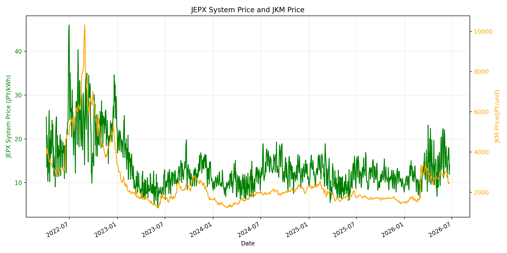
WTIの推移グラフ
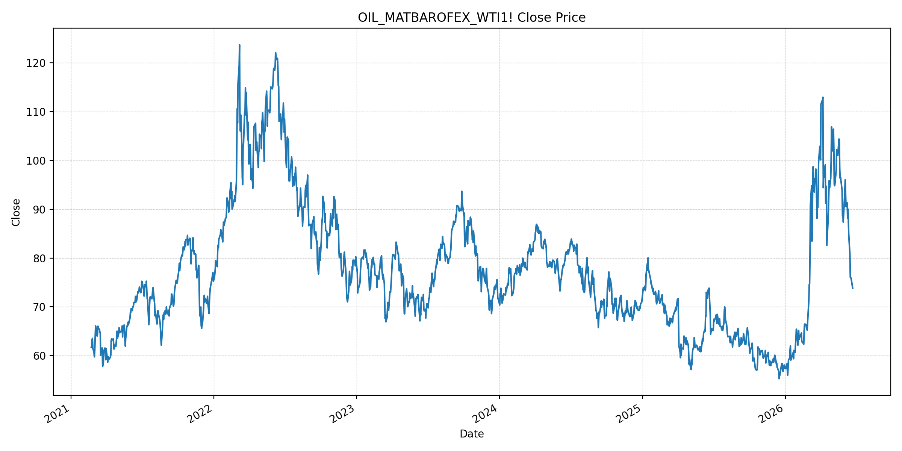
JEPXエリアプライスグラフ（直近一年分）
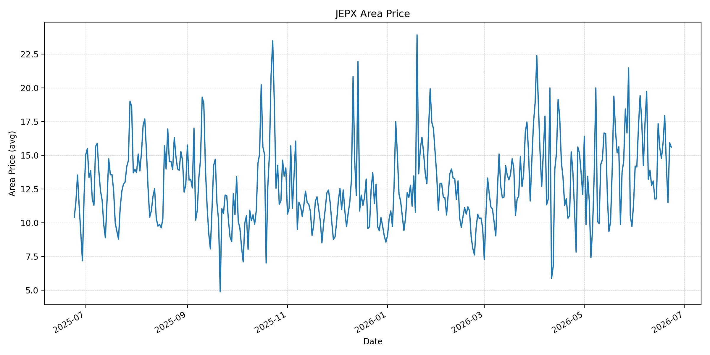
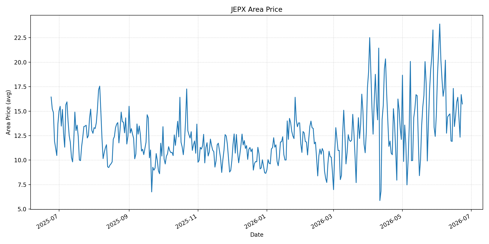
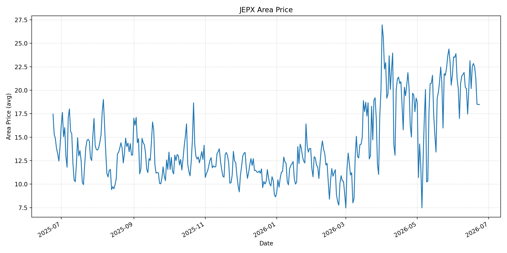
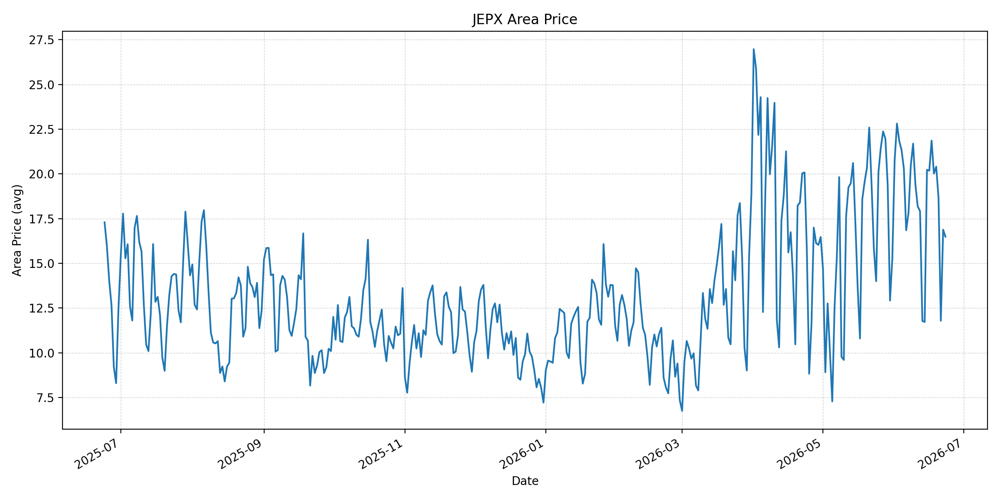
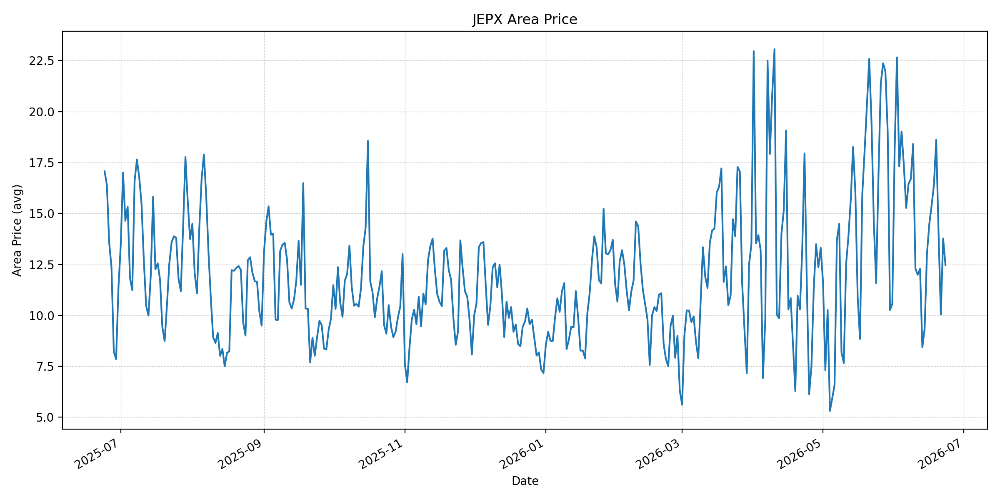
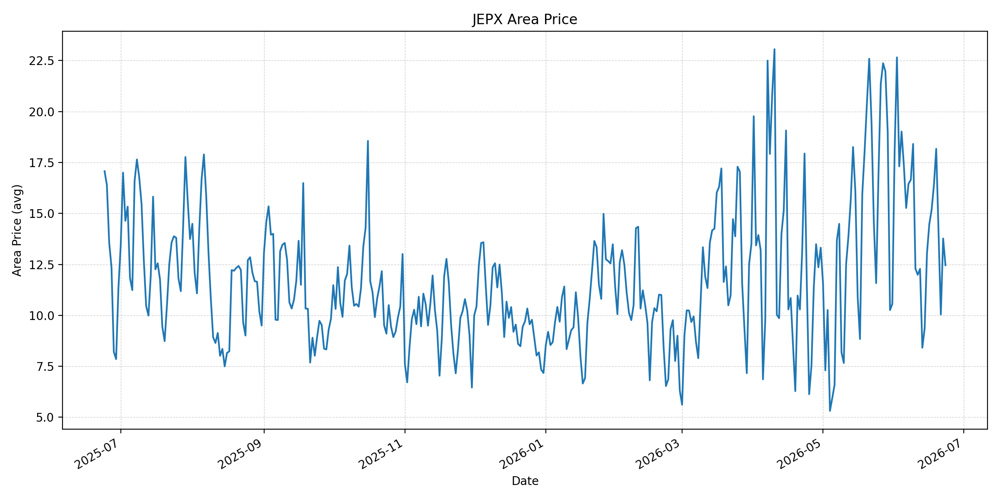
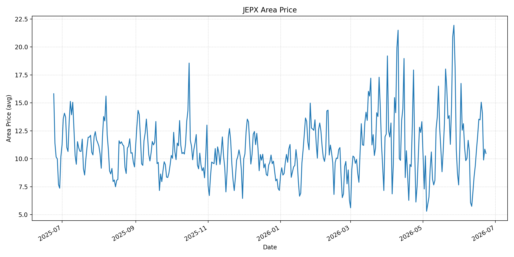
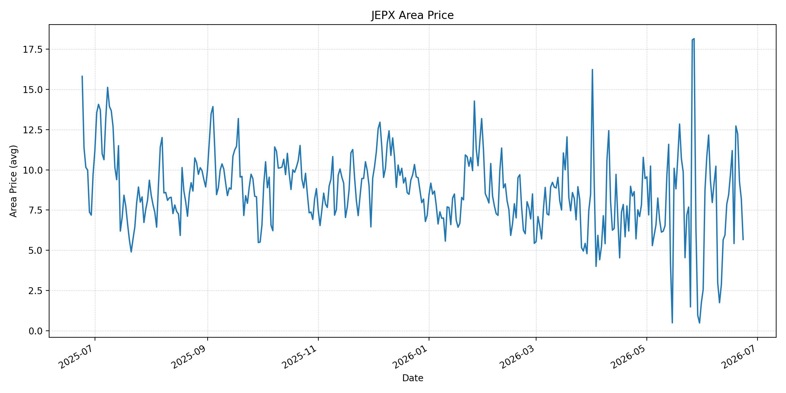
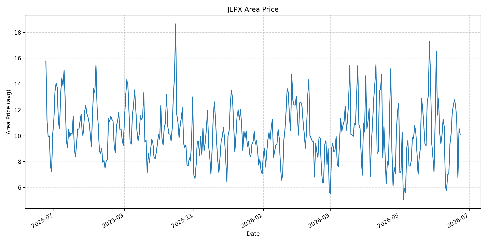
短期トレンド
JKMとJEPXシステムプライスの推移グラフ
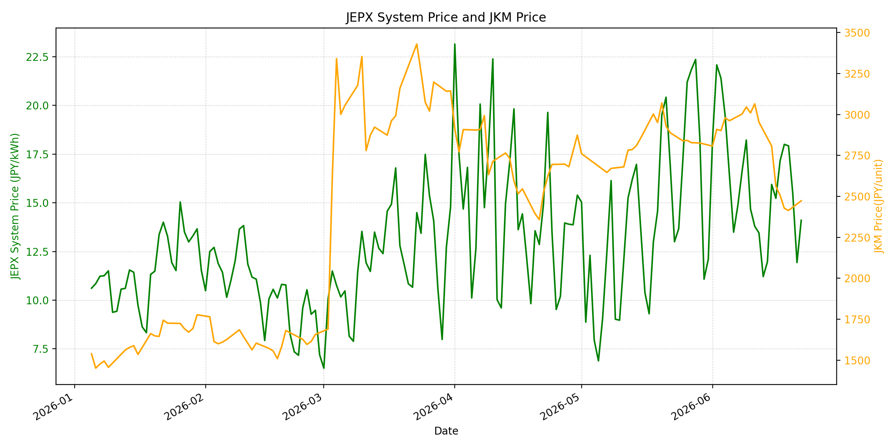
WTIの推移グラフ
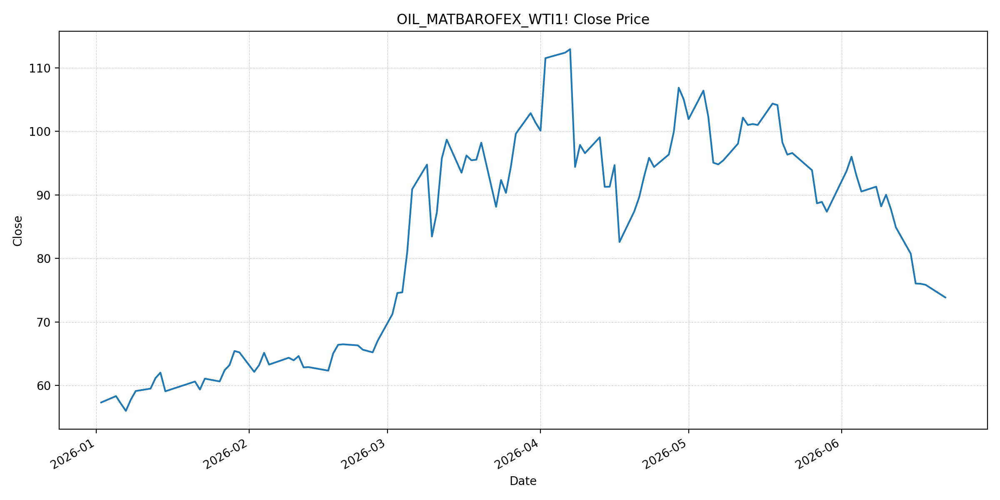
JEPXシステムプライス
JEPXは受渡日ベースの最新非空値で評価しています。最新値は 2026-06-23 分です。先週終値は 2026-06-16 時点の直近値、先月終値は 2026-05-31 時点の直近値で評価しています。
| エリア | 当日価格 | 前日価格 | 前日比（％） | 先週終値 | 先週比（％） | 先月終値 | 先月比（％） | 過去最高値 | 最高値比（％） |
|---|---|---|---|---|---|---|---|---|---|
| システム | 14.12 | 14.10 | 0.14 | 15.23 | -7.29 | 12.10 | 16.69 | 64.06 | -77.96 |
| 北海道 | 15.60 | 15.92 | -2.01 | 15.53 | 0.45 | 11.38 | 37.08 | 73.92 | -78.90 |
| 東北 | 15.73 | 16.69 | -5.75 | 13.43 | 17.13 | 14.64 | 7.45 | 84.92 | -81.48 |
| 東京 | 18.48 | 18.49 | -0.05 | 20.18 | -8.42 | 21.65 | -14.64 | 86.13 | -78.54 |
| 中部 | 16.49 | 16.88 | -2.31 | 20.18 | -18.29 | 15.25 | 8.13 | 52.06 | -68.33 |
| 北陸 | 12.46 | 13.77 | -9.51 | 14.47 | -13.89 | 10.56 | 17.99 | 46.48 | -73.20 |
| 関西 | 12.46 | 13.77 | -9.51 | 14.47 | -13.89 | 10.56 | 17.99 | 46.48 | -73.20 |
| 中国 | 10.48 | 10.86 | -3.50 | 12.06 | -13.10 | 7.66 | 36.81 | 46.48 | -77.46 |
| 四国 | 5.67 | 8.19 | -30.77 | 9.70 | -41.55 | 1.74 | 225.86 | 46.48 | -87.80 |
| 九州 | 10.09 | 10.57 | -4.54 | 11.78 | -14.35 | 7.20 | 40.14 | 40.54 | -75.11 |
LNG先物価格
最新値は 2026-06-22 の LNG(close) です。先週終値は 2026-06-15 時点の直近値、先月終値は 2026-05-29 時点の直近値で評価しています。
| 当日価格 | 前日価格 | 前日比（％） | 先週終値 | 先週比（％） | 先月終値 | 先月比（％） | 過去最高値 | 最高値比（％） |
|---|---|---|---|---|---|---|---|---|
| 2473.00 | 2414.00 | 2.44 | 2808.00 | -11.93 | 2826.00 | -12.49 | 10319.00 | -76.03 |
石油先物価格
最新値は 2026-06-22 の OIL(close) です。先週終値は 2026-06-15 時点の直近値、先月終値は 2026-05-29 時点の直近値で評価しています。
| 当日価格 | 前日価格 | 前日比（％） | 先週終値 | 先週比（％） | 先月終値 | 先月比（％） | 過去最高値 | 最高値比（％） |
|---|---|---|---|---|---|---|---|---|
| 73.86 | 75.85 | -2.62 | 80.75 | -8.53 | 87.36 | -15.45 | 123.70 | -40.29 |
ニュース
イラン情勢に関するニュース
- 2026年6月22日、Guardianは、イランが米国との合意の一環としてUN核査察官の復帰を受け入れ、米国はイランの石油輸出制裁を一時解除すると報じました。核監視再開は合意履行の信頼性を高める材料です。 参照: The Guardian, 2026-06-22
- 2026年6月22日、APは、スイスでの高官協議が最終合意に向けた基礎を作り、60日間の暫定合意の下でホルムズ海峡の開放維持、レバノンでの停戦、核問題の協議が進むと報じました。 参照: AP, 2026-06-22
ホルムズ海峡経由の石油・LNGに関するニュース
- 2026年6月22日、MarketWatchは、緊張緩和とホルムズ通航回復により、約1.5億バレルの原油が市場に出る可能性があると報じました。週末には少なくとも71隻のタンカーが通航した一方、平時の135隻には届いていません。 参照: MarketWatch, 2026-06-22
- APは、暫定合意によりホルムズ海峡の通航維持メカニズムが協議され、タンカー交通の再開が原油価格の下押しにつながっていると報じています。ただし、機雷除去、保険料、船会社の安全判断は引き続き制約です。 参照: AP, 2026-06-22
ホルムズ海峡経由でない石油・LNGに関するニュース
- 過去24時間で、日本向けの非ホルムズ新規大型調達に関する強い追加報道は確認できませんでした。MarketWatchは、中東各国がホルムズ依存を下げるため代替輸送ルートを再評価していると報じています。 参照: MarketWatch, 2026-06-22
- Guardianは、60日間の制裁免除によりイランが主に中国向けに石油取引を行えると報じました。非ホルムズ調達の新規確保より、イラン産原油の市場復帰と既存航路の安定化が現在の焦点です。 参照: The Guardian, 2026-06-22
日本国内のイラン戦争に関係するニュース
- 過去24時間で、JEPX制度や国内電力需給ルールを直接変更する日本政府の強い新規発表は確認できませんでした。直近では経済産業省が2026年5月20日に、今夏は全エリアで最低限必要な予備率3%を確保できるため節電要請は実施しないと発表しています。 参照: 経済産業省, 2026-05-20
- 同発表では、国際情勢の変化、異常気象、発電所休廃止、火力発電所の地域集中をリスクとして明記しています。ホルムズ通航回復が進んでも、国内卸電力は燃料調達と地域需給を分けて確認する必要があります。 参照: 経済産業省, 2026-05-20
インサイト
ニュース事項による日本の電力市場への影響（短期：数日〜1週間）
- JEPXシステムプライスは 14.12 円/kWhで前日比 0.14% と横ばいです。東京は 18.48、中部は 16.49 まで下がり、燃料安とホルムズ通航回復期待が短期心理を冷ましています。
- OILは 73.86 で前日比 -2.62%、先週比 -8.53% と下落しました。MarketWatchが指摘する原油供給増はJEPXの燃料コスト見通しを下げる材料ですが、通航量は平時水準未満で、保険料や安全確認は残ります。
- LNGは 2473.00 で前日比 2.44% と小幅反発しましたが、先週比は -11.93% です。短期では燃料全体の下押しが優勢ですが、四国 5.67 などエリア別の価格差が大きく、地域需給の確認は続きます。
ニュース事項による日本の電力市場への影響（長期：1ヶ月〜半年）
- UN査察官の復帰と60日間の暫定合意は、核問題とホルムズ通航の安定化に向けた前進です。LNGは過去最高値比 -76.03%、OILは -40.29% と低位で、合意履行が続けば半年内の燃料コスト低下余地はあります。
- 一方、MarketWatchが示す通航量はまだ平時未満で、機雷除去、保険料、代替航路の再評価が残ります。日本のLNG・石油調達では、スポット価格だけでなく、船腹・保険・通航ルールの安定化が1ヶ月から半年の焦点です。
- 経済産業省は今夏の節電要請を見送っていますが、国際情勢と火力発電所の地域集中をリスクとして残しています。システム価格は先月比 16.69% とまだ高く、燃料安が進んでも夏季需要と地域需給が卸価格を下支えする可能性があります。